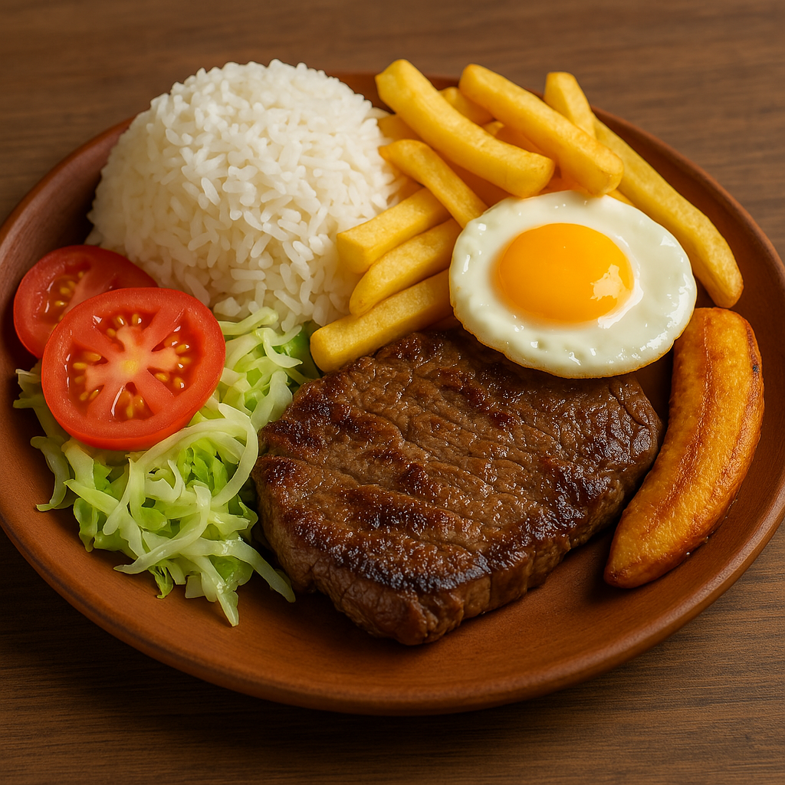

HOME
Receta del Medio Lomo

El Medio Lomo es un plato facil de hacer con ingredientes faciles de conseguir y es a la vez my agradable al gusto por la
variedad de sabores que convergen en el, tambien es una buena opcion para saciar a cualquier persona con solo aumentar uno o varios elemenots
del del plato
Bueno pues "mise en place" (preparemonos)
Ingredientes y Preparacion
Ingredientes
- Carne de res (puede ser el corte que prefiera)
- Huevos (uno o dos por persona)
- Papas (opcional)
- Arroz
- Postre o platano para cocer, como le llamen en su pais
- Ensalada (a su preferencia pero el tomate no puede faltar)
Preparacion
Empezaremos a cocinar con los elementos que deben ser cocinados por un tiempo determinado, mientras estos cuecen prepararemos los
otros elementos
-
Arroz
Primero haremos el arroz, dos tazas de agua por una taza de arroz en coccion media a 20min eso para el arroz blanco
Puede tostar el arroz en un sarten esto le dara un sabor diferente y evitara que se cuelen entre si, debe
considerar que el tostado reduce el tiempo de coccion del arroz entonces podria empezar a evaluar la textura deseada a los 15min
el tiempo de tostado dependera de la cantidad de arroz pero con que se torner amarillos sera la señal de parar, si se doran demaciado
podria ser contra producente para la salud por la formacion de acrilamidas
Debe conciderar la potencia de su cocina y la altura de su ciudad al calcular el tiempo de coccion aunque creo que estoy siendo demaciado minucioso xDD
Yo le recomiendo no usar aceite de cocina para tostar el arroz no es necesario y alcanzaria su punto de humo rapidamente debido a que se requiere poco
pero si aun asi quiere ponerle le recomiendo usar un aceite con un punto de humo alto como el ghee, coco o de aguacate y si usted querido lector
usa aceite de canola no es bienvenido aqui... no es cierto xD pero los aceites vegetales no son lo mejor para su salud pero si podrian dar
un de sabor diferente si se los usa bien cuidando su punto de humo claro esta
Le recomiendo encarecidamente ponerse un temporizador de 15min en su celular para empezar a vigilar el arroz y su textura ya que mientras este se cuese estaremos ocupados
cocinando los demas ingredientes
-
A freir
Hay muchas formas de cocinar la carne en sus distintos de puntos a preferencia pero es novato al freir carnes le invito a probar mi metodo
en lo personal me gusta la carne bien muerta y tierna sale pues.
sea la cantidad de carne que haya comprado lo cocinaremos todo a la vez siempre y cuando entre en su sarten, pueden estar maximo dos sobrepuestos sobre otros ya que
la carne tiende a encogerse
Empecemos acomodando las carnes en el satern frio luego exparsimos la sal sobre la carne con que la sal cubra un 40% de la superficie de esta basta
Ponemos un chorrito de salsa de soja
Cortamos el ajo en rodajas y los ponemos sobre la carne dos dientes de ajo bastarian si gusta ponga 3 o 4
con eso seria suficiente pero podria agregar piscas de comino, si gusta, use pimienta un par de veces pero recomiendo ponerle poco
Ahora esto sonara loco pero confie en mi es lo que volvera tierna la carne, agregue agua hasta que la carne este casi cubierta(si usted es nuevo en la cocina
puede poner mas agua para evitar quemar su carne)
ahora si pongalo en fuego alto y comience a cronometrar 10min. cuando el agua comience a hervir, una vez transcurrido ese tiempo de vuelta la carne, para este entonces
la se deberia haber ido la mitad del agua entonces ṕuede elegir dos opciones, una poner fuego lento y terminar de coser su carne asi por otros 10min o mantener el fuego alto
y esperara a que el agua se haya evaporado, agregar aceite (no tema poner aceite al agua caliente no es peligroso como lo es a la inversa) y terminar dorando un poco la carne
para muchos puristas esto seria una locura pero para los novatos se asegura de tener cocida la su carne sin quemarla en la fritura por una novatada
Una vez freida la carne freiremos los huevos este ultimo no es tan complicado para evitar quemar su huevo de la vuelta cuando note que este
tenga una textura firme para soportar las fuerzas g al darle la vuelta 180° puede evaluar la textura con la cuchara o espatula un par de minutos despues
para ver si la yema esta solida puede sacarlo ahroa para tener una yema algo liquida, en lo personal y para este plato le recomiendo tener el huevo bien muerto
Como ultima fritura usaremos el postre o platano(como se llame en su pais en el mio es llamado postre) para freir, el procedimiento es simple cortelas en rodajas largas, es decir
cortar en forma diagonal y asi en lugar de tener un circulo tendrems un obalo alargado como en la imagen
Una vez que note que los bordes empiezan a cambiar de color de vuelta, debe ser rapido si hay muchas rodajas en el sarten
una vez vea que los bordes comienzan a dorarse saquelos, esta parte puede ser frustrante ya que se le quemaran si es novato o no a tostado este ingrediente en el pasado
-
Ensalada
si esta muy cansado agarre unos tomates frotelos en un plato con agua y luego termine enjuagandolos el chorro de agua, cortelo en rodajas para ponerlos en
un plato aparte y porque no un pepino, lo pela y luego lo pasa por un chorro de agua y luego lo corta en rodajas o cuadritos
Si aun le quedan fuerzas o si le estan ayudando lo que seria genial esta persona deberia desinfectar y lavar bien las verduras que se usaran en especial si son lechugas
y espinacas o brocolis, verduras en general que provengan de cultivos regados con aguas de desechos
Comer
Servimos el arroz en un palto plato, ponemos la papa hervida si lo hizo en un costado
servimos la carne, el huevo y los postres distribuidos en el plato o podria poner las carnes y huevo en un plato aparte
y listo "Bon a Appetit"
bua bua buaa
bua bua buaa
bua bua buaa